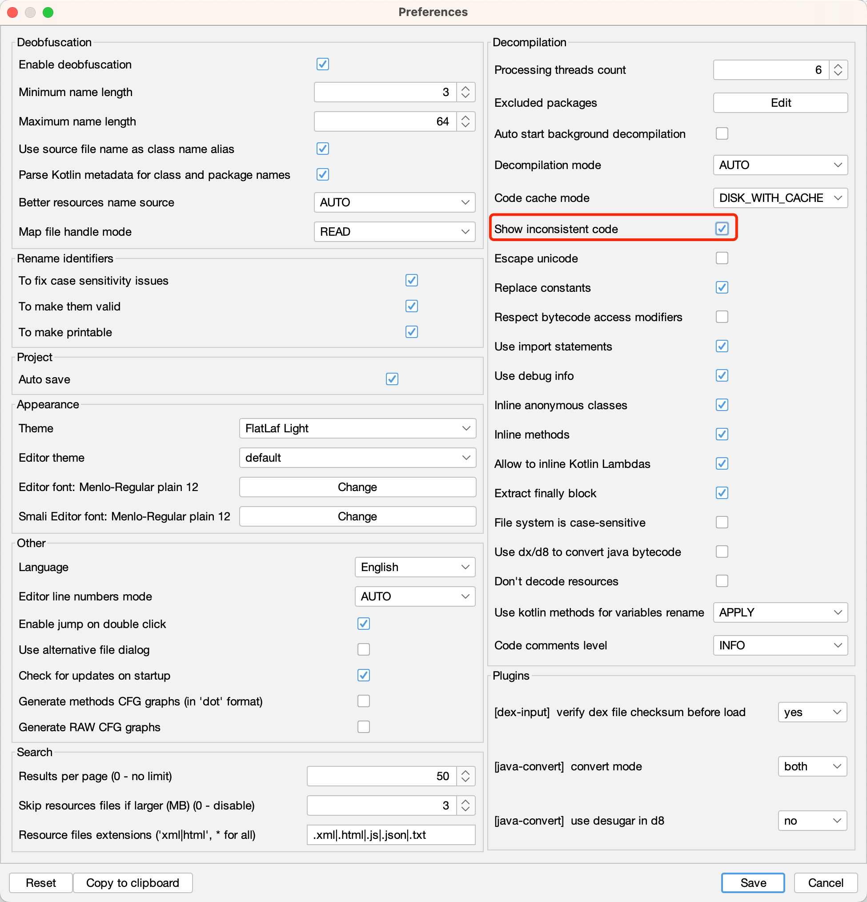
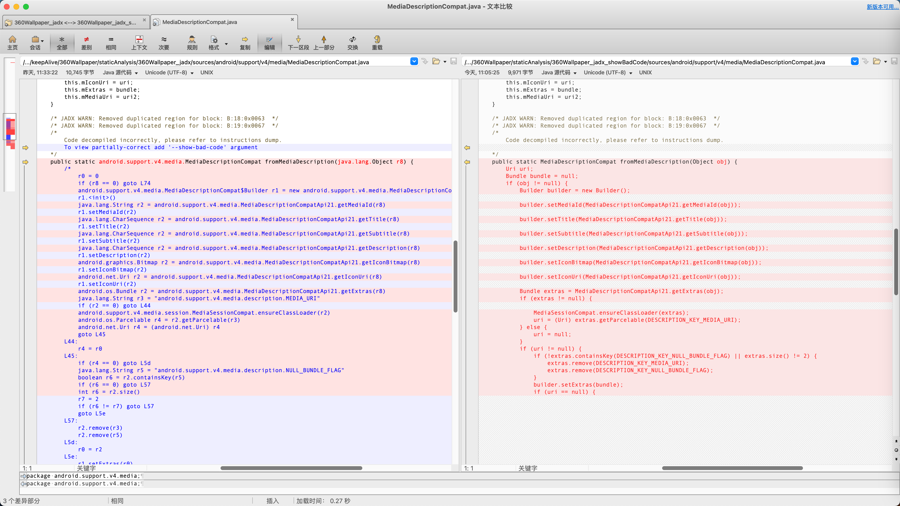

显示坏代码
用jadx反编译出的java代码中，有时候会看到类似的输出：
/*
Code decompiled incorrectly, please refer to instructions dump.
To view partially-correct add '--show-bad-code' argument
*/
举例：
360Wallpaper_jadx/sources/androidx/core/content/pm/ShortcutManagerCompat.java
/* JADX WARN: Removed duplicated region for block: B:7:0x002b */
/*
Code decompiled incorrectly, please refer to instructions dump.
To view partially-correct add '--show-bad-code' argument
*/
private static java.util.List<androidx.core.content.pm.ShortcutInfoChangeListener> getShortcutInfoListeners(android.content.Context r8) {
/*
java.util.List<androidx.core.content.pm.ShortcutInfoChangeListener> r0 = androidx.core.content.pm.ShortcutManagerCompat.sShortcutInfoChangeListeners
if (r0 != 0) goto L71
java.util.ArrayList r0 = new java.util.ArrayList
r0.<init>()
android.content.pm.PackageManager r1 = r8.getPackageManager()
android.content.Intent r2 = new android.content.Intent
java.lang.String r3 = "androidx.core.content.pm.SHORTCUT_LISTENER"
r2.<init>(r3)
java.lang.String r3 = r8.getPackageName()
r2.setPackage(r3)
r3 = 128(0x80, float:1.794E-43)
java.util.List r1 = r1.queryIntentActivities(r2, r3)
java.util.Iterator r1 = r1.iterator()
...
...
...
L6b:
java.util.List<androidx.core.content.pm.ShortcutInfoChangeListener> r8 = androidx.core.content.pm.ShortcutManagerCompat.sShortcutInfoChangeListeners
if (r8 != 0) goto L71
androidx.core.content.pm.ShortcutManagerCompat.sShortcutInfoChangeListeners = r0
L71:
java.util.List<androidx.core.content.pm.ShortcutInfoChangeListener> r8 = androidx.core.content.pm.ShortcutManagerCompat.sShortcutInfoChangeListeners
return r8
*/
throw new UnsupportedOperationException("Method not decompiled: androidx.core.content.pm.ShortcutManagerCompat.getShortcutInfoListeners(android.content.Context):java.util.List");
}
其含义是：
当jadx反编译某个类=输出的单个java文件期间，部分内容，比如某个类的某个函数、某个函数中部分的代码等，无法完整的反编译=反编译期间遇到一些无法解析的错误，此时，就会显示出上述提示
而我们，其实对于部分解析出错的代码，并不是特别关心
反编译结果虽然有错误，但是对于伪代码用来查看大致的代码逻辑，则总体影响不大
所以希望：忽略这些解释的错误，尽可能多的显示出反编译的结果（有些个别的错误，可以忽略）
为了实现此目的，则可以去：
- 开启坏代码
如何开启坏代码功能
- 如何开启坏代码功能 = 开启坏代码的具体操作方式
- cli=命令行：加上
--show-bad-code- 举例
jadx --show-bad-code -d . 360Wallpaper_1.0.4_apkcombo.com.apk
- 举例
- GUI=图形界面中：勾选：
Show inconsistent code- 举例
- 
- 举例
- cli=命令行：加上
开启坏点前后的效果对比
- 文件：
360Wallpaper_jadx/sources/android/support/v4/media/MediaDescriptionCompat.java- 截图对比
- 
- 代码对比
- 开启坏代码之前
/* JADX WARN: Removed duplicated region for block: B:18:0x0063 */ /* JADX WARN: Removed duplicated region for block: B:19:0x0067 */ /* Code decompiled incorrectly, please refer to instructions dump. To view partially-correct add '--show-bad-code' argument */ public static android.support.v4.media.MediaDescriptionCompat fromMediaDescription(java.lang.Object r8) { /* r0 = 0 if (r8 == 0) goto L74 android.support.v4.media.MediaDescriptionCompat$Builder r1 = new android.support.v4.media.MediaDescriptionCompat$Builder r1.<init>() java.lang.String r2 = android.support.v4.media.MediaDescriptionCompatApi21.getMediaId(r8) r1.setMediaId(r2) java.lang.CharSequence r2 = android.support.v4.media.MediaDescriptionCompatApi21.getTitle(r8) r1.setTitle(r2) java.lang.CharSequence r2 = android.support.v4.media.MediaDescriptionCompatApi21.getSubtitle(r8) r1.setSubtitle(r2) java.lang.CharSequence r2 = android.support.v4.media.MediaDescriptionCompatApi21.getDescription(r8) r1.setDescription(r2) android.graphics.Bitmap r2 = android.support.v4.media.MediaDescriptionCompatApi21.getIconBitmap(r8) r1.setIconBitmap(r2) android.net.Uri r2 = android.support.v4.media.MediaDescriptionCompatApi21.getIconUri(r8) r1.setIconUri(r2) android.os.Bundle r2 = android.support.v4.media.MediaDescriptionCompatApi21.getExtras(r8) java.lang.String r3 = "android.support.v4.media.description.MEDIA_URI" if (r2 == 0) goto L44 android.support.v4.media.session.MediaSessionCompat.ensureClassLoader(r2) android.os.Parcelable r4 = r2.getParcelable(r3) android.net.Uri r4 = (android.net.Uri) r4 goto L45 L44: r4 = r0 L45: if (r4 == 0) goto L5d java.lang.String r5 = "android.support.v4.media.description.NULL_BUNDLE_FLAG" boolean r6 = r2.containsKey(r5) if (r6 == 0) goto L57 int r6 = r2.size() r7 = 2 if (r6 != r7) goto L57 goto L5e L57: r2.remove(r3) r2.remove(r5) L5d: r0 = r2 L5e: r1.setExtras(r0) if (r4 == 0) goto L67 r1.setMediaUri(r4) goto L6e L67: android.net.Uri r0 = android.support.v4.media.MediaDescriptionCompatApi23.getMediaUri(r8) r1.setMediaUri(r0) L6e: android.support.v4.media.MediaDescriptionCompat r0 = r1.build() r0.mDescriptionObj = r8 L74: return r0 */ throw new UnsupportedOperationException("Method not decompiled: android.support.v4.media.MediaDescriptionCompat.fromMediaDescription(java.lang.Object):android.support.v4.media.MediaDescriptionCompat"); } - 开启坏代码之后
/* JADX WARN: Removed duplicated region for block: B:18:0x0063 */ /* JADX WARN: Removed duplicated region for block: B:19:0x0067 */ /* Code decompiled incorrectly, please refer to instructions dump. */ public static MediaDescriptionCompat fromMediaDescription(Object obj) { Uri uri; Bundle bundle = null; if (obj != null) { Builder builder = new Builder(); builder.setMediaId(MediaDescriptionCompatApi21.getMediaId(obj)); builder.setTitle(MediaDescriptionCompatApi21.getTitle(obj)); builder.setSubtitle(MediaDescriptionCompatApi21.getSubtitle(obj)); builder.setDescription(MediaDescriptionCompatApi21.getDescription(obj)); builder.setIconBitmap(MediaDescriptionCompatApi21.getIconBitmap(obj)); builder.setIconUri(MediaDescriptionCompatApi21.getIconUri(obj)); Bundle extras = MediaDescriptionCompatApi21.getExtras(obj); if (extras != null) { MediaSessionCompat.ensureClassLoader(extras); uri = (Uri) extras.getParcelable(DESCRIPTION_KEY_MEDIA_URI); } else { uri = null; } if (uri != null) { if (!extras.containsKey(DESCRIPTION_KEY_NULL_BUNDLE_FLAG) || extras.size() != 2) { extras.remove(DESCRIPTION_KEY_MEDIA_URI); extras.remove(DESCRIPTION_KEY_NULL_BUNDLE_FLAG); } builder.setExtras(bundle); if (uri == null) { builder.setMediaUri(uri); } else { builder.setMediaUri(MediaDescriptionCompatApi23.getMediaUri(obj)); } MediaDescriptionCompat build = builder.build(); build.mDescriptionObj = obj; return build; } bundle = extras; builder.setExtras(bundle); if (uri == null) { } MediaDescriptionCompat build2 = builder.build(); build2.mDescriptionObj = obj; return build2; } return null; }
- 开启坏代码之前
- 截图对比